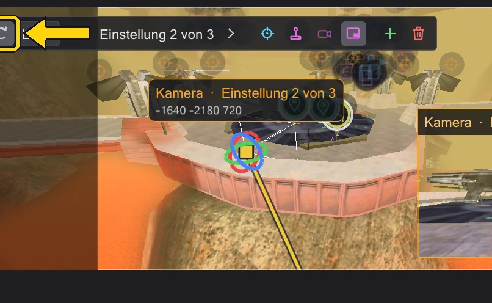

Kamera
Jedes camera MOVE und PAN des Skripts ist eine Einstellung, die du siehst, greifst und fliegst - das Skript wird beim Ziehen neu geschrieben.

Einstellungen#
In ICARUS ist eine Einstellung camera ( MOVE, <Ort>, <Zeit> ) gefolgt von camera ( PAN, <Winkel>, <Zeit> ). BehavEd-Remake liest sie der Reihe nach und zeichnet jede als Kamerasymbol auf die Karte. Ein Klick auf das Symbol wählt die Kamera; die Liste Einstellungen links zeigt jede Einstellung mit ihrer Zeit und Fahrzeit (fährt 6,0 s). Ein Klick auf eine Zeile springt dorthin.
- Vorige Einstellung / Nächste Einstellung blättern durch die Einstellungen; Zur Einstellung fliegen stellt deine Ansicht genau dorthin, wo die gewählte Einstellung steht und hinschaut.
- Neue Kameraeinstellung hier fügt an deiner jetzigen Ansicht ein MOVE und ein PAN hinter der gewählten Einstellung ein. Auf Ansicht setzen setzt die gewählte Einstellung dorthin, wohin du gerade schaust.
- Einstellung löschen entfernt sie. Unter Gewählte Einstellung tippst du genaue Werte: Ort, Blickrichtung und Fahrzeit (0 = Schnitt).
Eine Einstellung verschieben und drehen#
Die Leiste über der Ansicht schaltet das Gizmo um: Verschieben zeigt drei Pfeile und ein Kästchen in der Mitte - einen Pfeil ziehen verschiebt entlang einer Achse, das Kästchen in der Bildebene. Drehen zeigt drei Ringe für Nicken, Gieren und Rollen. Welt / Lokal entscheidet, ob die Pfeile der Karte oder der Kamera folgen. Beim Loslassen stehen die neuen Werte im Skript - ein Rückgängig-Schritt.



Steht die Zeitleiste beim Anfassen zwischen zwei Schlüsseln, entsteht an dieser Stelle ein neuer Schlüssel, statt den Anfang zu ändern - wie der Auto-Key in Animationsprogrammen. Beim Steuern setzt Enter ebenso einen Schlüssel (Eine Einstellung selbst fliegen (Steuern)).
Kamerabahnen#
Die gewählte Kamera zeichnet ihre Bahn: schon geflogene Stücke gelb, der Rest grau. Bei vielen Einstellungen wird das unübersichtlich - Aktive Bahn zeigt nur die Fahrt in die jetzige Einstellung und weiter zur nächsten, Alle Bahnen zeigt jede Fahrt. Beide Knöpfe stehen im Kamerafeld.
Eine Einstellung selbst fliegen (Steuern)#
Steuern setzt dich in die Einstellung: rechte Maustaste halten zum Umsehen, W A S D zum Bewegen, Q E für runter und hoch. Übernehmen schreibt die Ansicht ins Skript, Esc bricht ab. Während du steuerst, die Zeitleiste weiterstellen und Enter drücken (Schlüssel setzen) setzt Schlüssel um Schlüssel entlang des Wegs. Beim Steuern gilt der Zoom der Einstellung, und der Rahmen des Spielbilds ist zu sehen - du richtest die Einstellung so ein, wie das Spiel sie zeigen wird.
Vorschau und Durchschauen#
Kameravorschau (in der Leiste der gewählten Kamera, oben links in der Ansicht) zeigt unten rechts ein kleines Bild aus Sicht der Kamera; es folgt dem Gizmo beim Ziehen. Ein Klick aufs Bild schaut groß durch die Kamera; dabei zeigt das Abspielen der Zeitleiste die Zwischensequenz so, wie das Spiel sie zeigen wird. Durch die Kamera in derselben Leiste tut das direkt.
Was das Spiel zeigt. Das Spiel rechnet den Bildwinkel einer Kamera für sein eigenes Fenster - beim Blick durch die Kamera liegt das Bild deshalb in einem Rahmen im Seitenverhältnis des Spiels: außen schwarz, Kinobalken und Blenden im Rahmen - genau das Bild, das der Spieler sieht. Seitenverhältnis und cg_fovAspectAdjust stellst du unter Ansicht einstellen → Spielbildschirm ein. Automatisch folgt den Spielregeln in den Einstellungen (Einstellungen): Movie Duels läuft in deiner Desktopauflösung mit cg_fovAspectAdjust 1 (ein ZOOM behält seinen senkrechten Winkel, breite Bildschirme sehen seitlich mehr), OpenJK startet mit 800x600 und 0 (der ZOOM ist der waagerechte Winkel). Im Zweifel cg_fovAspectAdjust und r_mode in die Konsole des Spiels tippen. In der freien Ansicht zeigt ein heller Rahmen, was eine Kamera an dieser Stelle sähe (Zoom 90); abschalten mit Spielrahmen in der freien Ansicht. Vor camera ( ENABLE ) und nach DISABLE zeigt das Spiel den Blick des Spielers mit cg_fov 80 - Abspielen und Vorschau ebenso, in Skripten, die die Kamera selbst schalten. ROLL kippt das Bild, und camera ( PATH, ... ) fliegt die aufgezeichnete ROFF-Bahn samt ihren Notizen cut, fov, fovzoom und fovaccel.
 Animation
Animationref_tag oder schauen auf einen. Dann sagt es das Feld, und das Verschieben der Einstellung verschiebt diesen ref_tag in der Karte - das Skript nennt ihn nur.